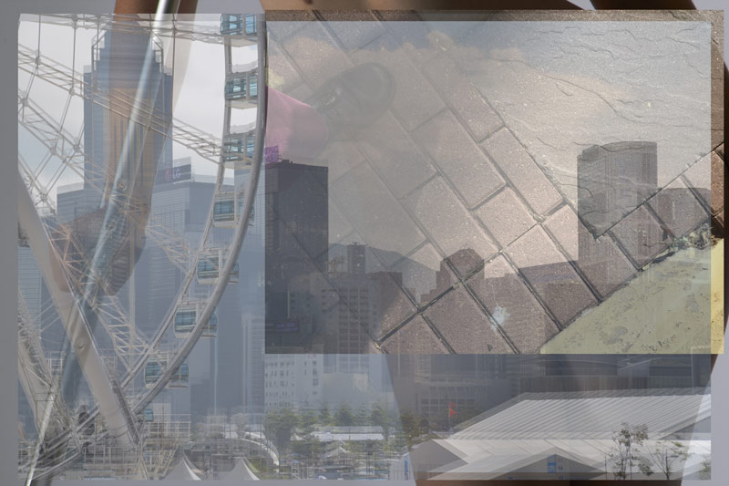
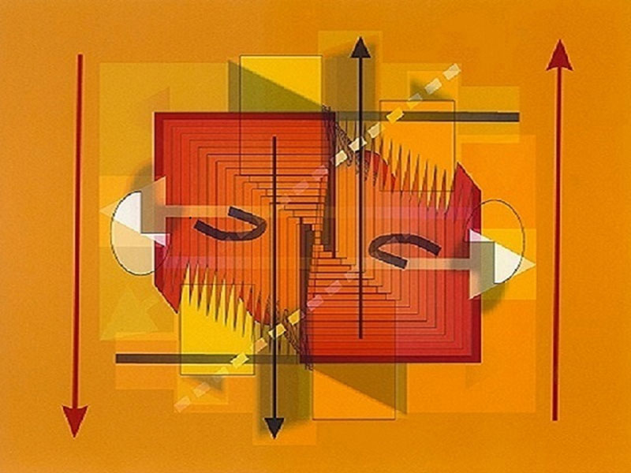
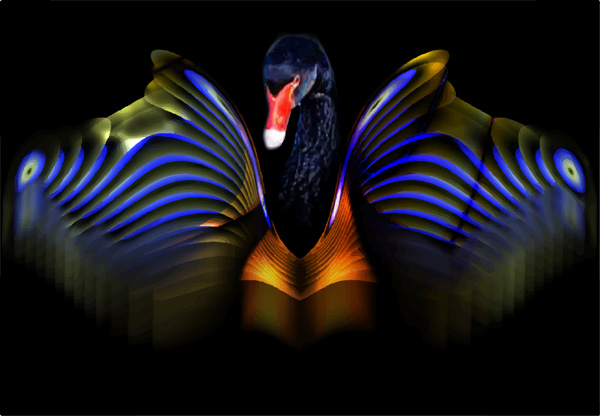
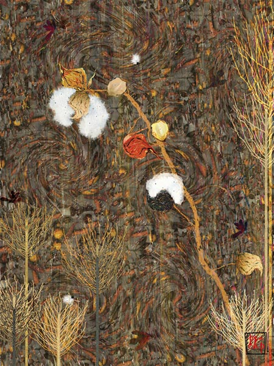
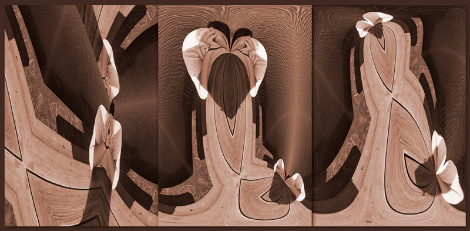
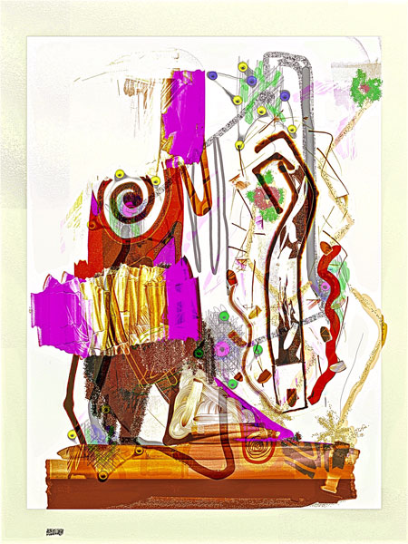

THIS PAGE HAS NOT YET BEEN FULLY POPULATED
IMAGES OF THE DAY 23
02/01/2022 - 02/10/2022
Click image to visit MOCA gallery where image resides
Digiteze 
by Nicholas McCumber
02/01/2022
The Moment of Chun Jin Sunim
by Kazmier Maslanka
02/02/2022
Mirror 001 
by Marion Schmitz
02/03/2022
Black Swan 
by Adonis Halepianos
02/04/2022
State of the World
by Susan Kaprov
02/05/2022
Milkweed Pods 
by Peach Pair
02/06/2022
Portrait in the 21st Century
by Joe Nalven
02/07/2022
No Place to Hide Triptych 
by Delores Kaufman
02/08/2022
Untitled 
by John Hughson
02/09/2022
Image of the Day
Portrait in the 22nd Century
by Joe Nalven
02/10/2022